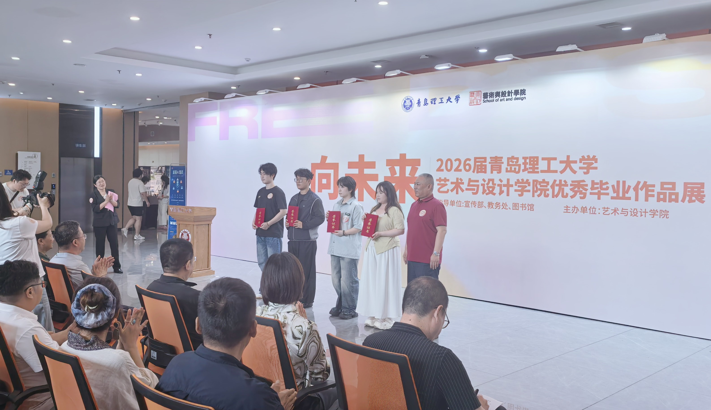

逐光·绽放——2024届毕业设计作品展
"逐光·绽放"是青岛理工大学艺术与设计学院每年举办的毕业设计作品展，集中展示各专业毕业生的优秀设计作品，是学生四年学习成果的集中体现。本次展览汇聚了环境设计、视觉传达设计、产品设计、绘画四个专业近200件优秀作品。
展览信息
- 展览时间：2024年6月15日 - 6月30日
- 展览地点：青岛理工大学美术馆
- 开放时间：周一至周五 9:00-17:00，周六周日 10:00-16:00
参展作品
本次展览分为四个展区，分别展示四个专业的优秀毕业设计作品：


开幕式回顾
6月15日上午，"逐光·绽放"2024届毕业设计作品展在青岛理工大学美术馆隆重开幕。校领导、学院领导、师生代表及社会各界嘉宾出席了开幕式。展览得到了广泛好评，多家媒体进行了报道。
